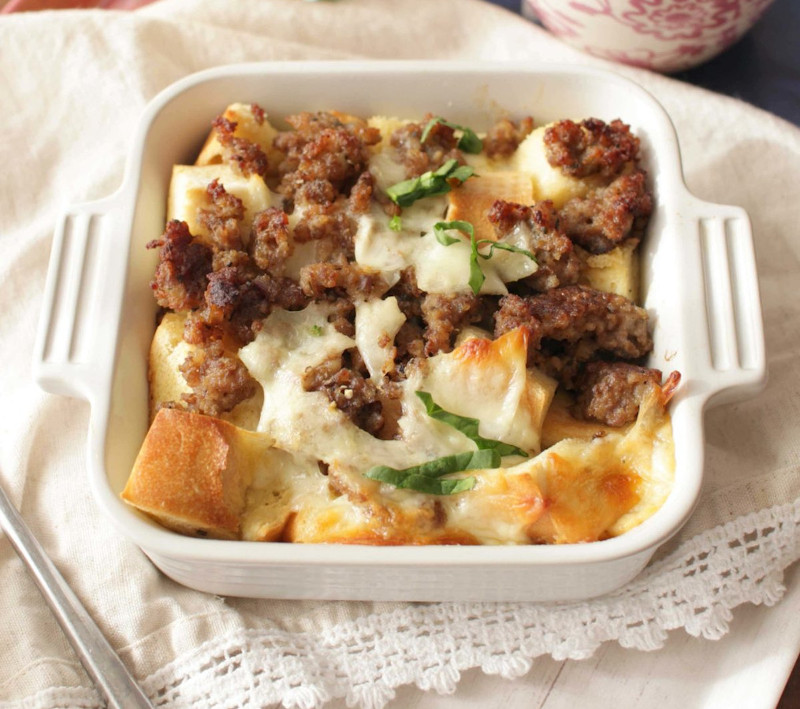

Breakfast for one.
Ingredients
- 6 ounces of ground pork or turkey sausage
- 1 Large egg
- 3/4 cup of milk
- 1/8 tsp of salt and pepper
- 2 cups cubed french, italian, or sourdough bread
- 1/2 cup shredded cheddar or monterey jack cheese
Directions
- Cook sausage until no longer pink. Transfer to plate and set aside.
- In a medium sized bowl, beat egg. Whisk in milk, salt, and pepper.
- Place bread in a small buttered baking dish. Sprinkle bread with the cooked sausage and cheese. Pour egg mixture over top.
- Cover and refrigerate overnight.
- Let casserole warm to room temperature. Preheat oven to 350 F. Bake casserole for 25 to 30 minutes or until egg mixture is set.